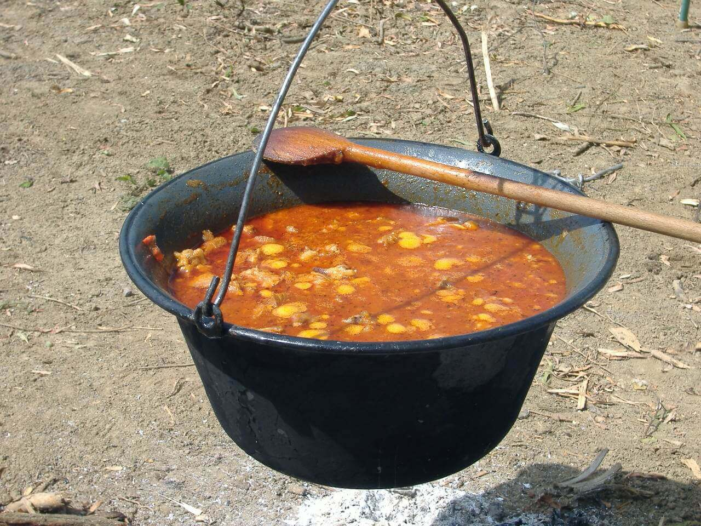
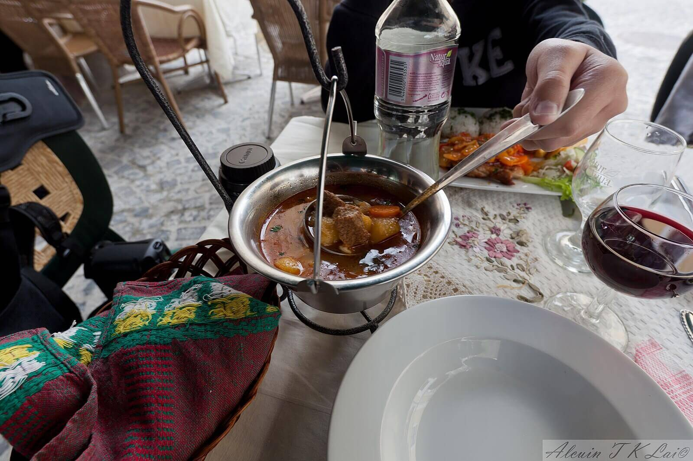
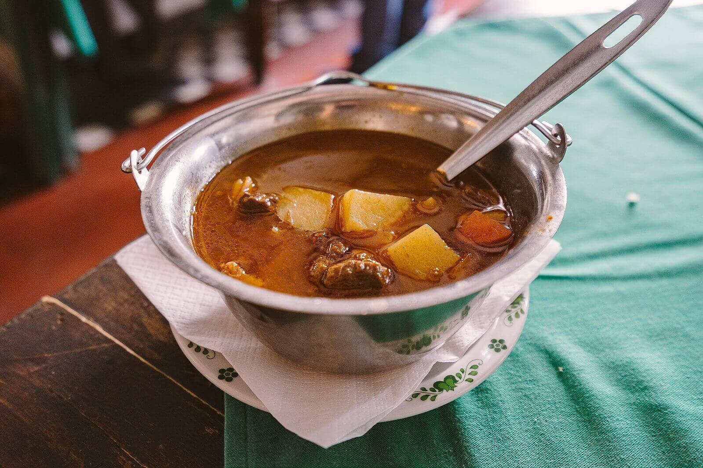
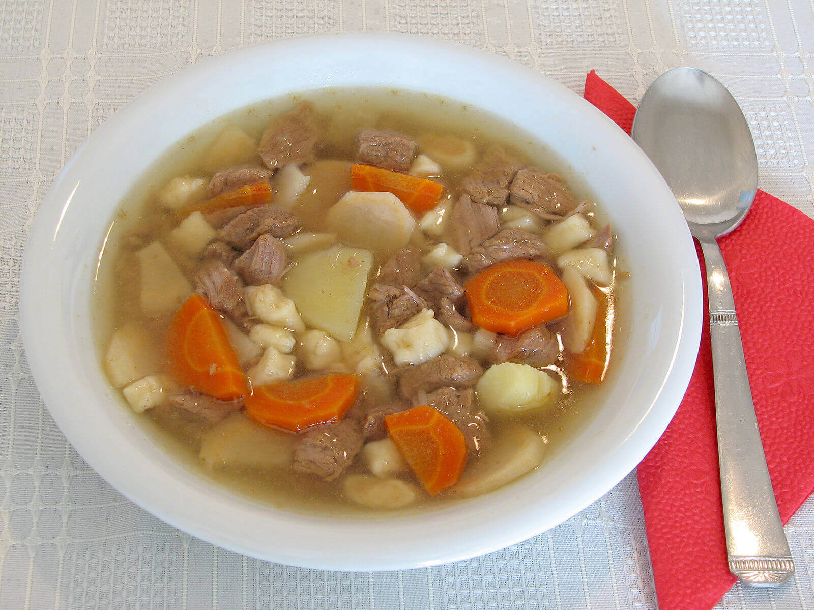
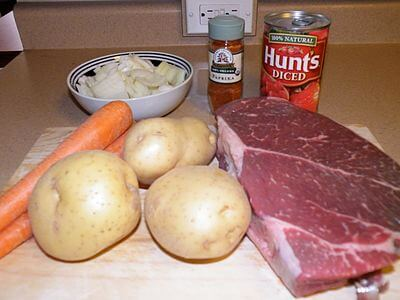
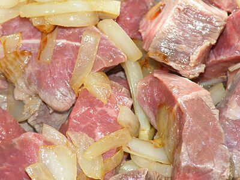

Gulyás
A gulyás, közeli rokonaival, a pörkölttel és a paprikással a legfontosabb parasztételek, amelyek a 19. században a polgári és a nemesi konyhában teljes mértékben létjogosultságot szereztek. A „magyar gulyásleves” 2017 óta hungarikum.
A magyar konyhaművészet alapjait képező három ételfajta (bizonyos szempontból idesorolható a halászlé is) története elválaszthatatlan egymástól, sőt a forrásokból nagyon sokszor az sem derül ki egyértelműen, hogy mely ételről van szó, ugyanis az elnevezések használata nem volt egységes, mint ahogy napjainkban sem az. A gulyás külföldön is az egyik legnépszerűbb magyar eredetű étel, amelyet igen sok országban ismernek Gulasch, goulash néven, bár elkészítési módjuk különbözik a „mi” gulyásunkétól. A gulyás hírnevét az utóbbi évszázadban elhomályosította a gulyásleves, amelynek történelmi szerepe, elkészítési módja egészen más, mint a pásztorok által készített eredeti gulyás ételé volt.
A gulyás története
Több forrás is megegyezik abban, hogy az étel születését, elterjedését az alföldi pásztorélethez kapcsolja, amelynek kerete a külterjes állattenyésztés volt. A pásztorok a településektől távol élve maguknak főztek, és ehhez szinte egyetlen főzőedényük volt, a fémbogrács. Kenyeret, szalonnát, fűszereket hoztak magukkal, s a hús is adott volt. Az 1790-es évekig valószínűleg a marhahús volt jellemző, hiszen a legelőkön főleg magyar szürkemarhát tartottak. Ekkor jelentek meg nagy számban a juhok, s a juhászok természetesen azoknak a húsát fogyasztották. Az első időkben köret (krumpli) nélkül fogyasztották, csak kenyérrel, a húsokat bicskahegyre tűzve, esetleg kanállal.
Mivel a marhatenyésztés a társadalom több rétegének biztosította jövedelmét, akik közvetlen kapcsolatba kerültek a pásztorokkal (földbirtokosok vagy megbízottaik, kereskedők, gazdag parasztok), előfordulhat, hogy korán megismerkedtek ezzel a könnyen elkészíthető, de ízletes étellel. Figyelembe véve készítésének egyszerűségét és a pásztorok életkörülményeit, elképzelhető, hogy a 18. század végére, első fennmaradt írásos megemlítésének idejére a gulyás (pörkölt, paprikás) mint ételtípus létezése már hosszú évszázadokra tekintett vissza. Fordulatot történetében a paprika megjelenése hozott, amelyet az első időkben kimondottan „paraszti” fűszernek tartottak. Váncsa István vélekedése szerint[3] a rendkívül magas piaci értékű marhahús semmiképpen sem lehetett a gulyások mindennapi eledele, nem is tekinthető jellegzetes pusztai ételnek, hanem inkább városi (pesti, bécsi) vendéglőkben feltalált (feltálalt) étel, a XIX. század második felétől.
Első ismert irodalmi előfordulása Mátyus István Diatetica című művében volt „Gujás-hús” alakban 1787-ben. Érdekessége, hogy az Erdélyben élő Mátyusnak az alföldi pásztorok hagyományos ételéről közvetlen tapasztalata nem volt, de a szövegkörnyezetből kitűnik, hogy a gulyás akkor már egy közismert ételelnevezés volt, és készítési módját is ismerték. A következő években is gyakran feltűnik különböző szerzők írásaiban, mint olyan étel neve, amelyhez külön magyarázat nem szükséges.
Gvadányi József peleskei nótáriusa 1790-ben hortobágyi utazása alatt ismerte meg a gulyáshúst, amelyet egy gulyás készített számára. Innen származik a gulyás készítésének első, igen szemléletes leírása. Érdekessége, hogy Gvadányi nem említi az étel nevét, valamint az hozzávalók között nem szerepel a paprika, amelyet a költő versének más helyén viszont megemlít törökbors néven. Az ételnév elmaradásának oka lehetett az is, hogy a pásztorok ételüket mindössze csak „hús” néven említették: húst főznek. Általában a gulyás elnevezést az irodalmi köznyelvben használták, a nép nyelvén a paprikás ételeket pörkölt vagy paprikás névvel illették.
A gulyás (pörkölt, paprikás) a paraszti konyhában is hamar feltűnt, erről már 1792-ből van írott adat. A paprikás húst 1786-ban említi először a szegedi piarista rendház rektora számadáskönyvében. Valószínűsíthető, hogy a munkásoknak készítették. Veszelszki Antal orvos, botanikus a törött fűszerpaprikát egyértelműen a köznép fűszerének tartja, s megemlíti, hogy „A' Magyarok, a' Rátzok gulyás – húsban igen szeretik.”
A gulyás igen hamar, már 1793-ban megjelent, mint katonaétel. A rajnai fronton egy magyar egység táborozott, amikor augusztus „21-dikben, mikor éppen egy kis gulyás húst főznénk, akkor ütött ránk az ellenség”, azaz a franciák. A tisztek is valószínűleg megismerkedtek vele. A gulyás másik útja az előkelő rétegek felé az utasok számára a vendégfogadókban felszolgált vagy vadászatokon fogyasztott ételként vezetett. Szirmay Antal 1804-ben a régebbi eredetű borsos gulyáshúst már mint a nemesi középrétegek hagyományos ételét említi, míg az újabb, paprikával készült változatot egyértelműen a paraszti ételek közé sorolja.
A gulyás mint nemzeti étel
Bármilyen különösnek tűnik, de a gulyás (pörkölt, paprikás) nemzeti étellé válása szoros összefüggésben állt II. József reformtörekvéseivel. Az uralkodó politikájával erősen veszélyeztette Magyarország jogi különállását, mivel azt Ausztriával és Csehországgal közös egységes birodalmi közigazgatási rendszerbe kívánta olvasztani. A kiváltságait féltő nemesség a magyar nyelv védelme és a magyar ruha újbóli divatba hozása mellett egy egyszerű alföldi pásztorételben vélte megtalálni azt az ételt, amely a magyar nép egységét és egyéni jellegét hangsúlyozza. Kiválasztódásának több oka is volt. Sajátos megjelenése (a paprika szép, egyéni színt adott neki), valamelyes ismertsége, amit az utazók, katonák révén ért el, sokat nyomott a latban, de az elsődleges ok egészen más volt. A gulyást színmagyar ételnek tartották, hiszen az Alföldnek olyan részéből származott (a Nagykunság, a Hortobágy és peremvidékei), amelyet a legkevésbé ért el a Dunántúlon igen jellemző „elnémetesedés”. Ilyen ételt a magyar nemesség asztalán nemigen lehetett volna találni, ezért esett egy pásztorételre a választás.
Az sem zavarta a szimbólumalkotókat, hogy a paprikás hús, a paprikás ételek nemigen voltak hagyományosnak nevezhetőek, hiszen a paprika használata nem tekintett vissza hosszú múltra. A céltudatos hagyományalkotás (a kitalált tradíció) gyors sikerét jelzi, hogy gróf Johann Centurius Hoffmannsegg szászországi utazó már 1794-ben úgy említi a paprikás ételt, mint magyar nemzeti eledelt: „ein ungarisches National-Gerichte von Fleisch mit türkischen Pfeffer” (egy húsból törökborssal (paprikával) készült magyar nemzeti étel). Mivel írásában ízletessége mellett dicsérte egészségre kedvező hatását, könnyűségét, valószínűleg gulyásról lehetett szó, amely a három étel közül a legkevésbé zsíros, „legkönnyebb”.
Ekkortól a gulyás karrierje gyorsan ívelt fel. Az 1800-as években a gulyás szó bekerült a szótárakba, az 1810-es években receptje megjelent a szakácskönyvekben, az 1820-as években feltűnt a vidéki városi vendéglők étlapján. Az 1830-as években tudományos értekezésben sorolják a magyar nemzeti jellegzetességek közé, s az 1840-es években a „pörkölt hús” megjelent a pesti belvárosi vendéglők kínálatában. S végül a paprikás ételek biztos helyet vívtak ki maguknak a polgári konyhában. Ezt jelzi, hogy egy 1810-es feljegyzés szerint Pesten a gujásos húst galuskával körítve fogyasztották. Széchenyi István 1830-ban született Hitel című művének előszavából következtethető, hogy a paprika mint fűszer használata már megjelent a főnemesi konyhákban is: „… mint sokan azt tartják igazán mesterszakácsnak, ki mindent rendkívül paprikáz, s csak azt ugyancsak magyar embernek, ki azt szereti is.”
Nemzeti étel státusza ellenére a gulyás nem volt igazán magas rangú étel a köznemesi, főnemesi és polgári asztalokon. Kimondottan férfiételként tartották számon, ami nem elég előkelő ahhoz, hogy hölgyvendégek elé is oda lehessen tálalni. Viszont a parasztok között az 1830-as évekre mindennapos pásztorételből lakodalmi fogássá nőtte ki magát, érdekes módon először az országnak azokban a részeiben, ahol a gulyás (pörkölt, paprikás) nem volt „őshonos”. Az ormánsági lakodalmakban már 1827-ben szolgáltak fel gullyásos húst, s a Tolna megyei német falvakban is az 1840-es években. Ezeken a területeken kimondottan ünnepi éteknek számított. Ez a folyamat a fő elterjedési területén, az Alföldön, ahol a gulyást, a pörköltöt és a paprikást pásztorételként ismerték, lassabban ment végbe, csak a 19. század közepe körül kezdődött, s egyes részein (pl. Debrecen környékén) egészen a 20. század elejéig tartott. Igazán csak a pörkölt/paprikás emelkedett az ünnepi ételek rangjára. Viszont a hétköznapi paraszti étkezések rendjébe igen hamar beépült, hiszen egykorú leírás szerint a szárnyasból készült tyúkpaprikás már 1846-ban hétközi ételnek számított.
A paprikás ételek elterjedése az ország területén nem volt egységes. Míg az Alföldön igen gyakran készítették őket hétköz- és ünnepnapokon is, addig a Dunántúlon csak az Alföldhöz közel eső területeken voltak igen korán ismert és fogyasztott ételek. Belső-Somogyban és Észak-Magyarországon csak az 1920-as években jelentek meg, s először csak ünnepi alkalmakra készítették a pörköltöt és a paprikást. Borsodban egészen az 1950-es évekig nem szerepelt a lakodalmi menüsorban egyik ételtípus sem. Az Alföldön kívüli területeken még az 1960-as években sem tartozott a leggyakoribb ételek közé. Viszont az Osztrák–Magyar Monarchia területén Bécsből indulva elterjedt mind német, mind cseh anyanyelvű területeken is. Csehország egyes részein az ünnepi étkezések egyik szereplője volt a gulyás.
Bográcsgulyás
Gulyásváltozatok
- Bográcsgulyás: fokhagymával, paradicsommal ízesített változat.
- Alföldi gulyás: zöldségekkel (répával, karalábéval stb.) gazdagon dúsított változat.
- Szegedi gulyás: zöldségekkel és csipetkével készített gulyás.
- Andrássy-gulyás: marha húsból készül
- Esterházy-gulyás: a zöldségeket vékony csíkokra vágva készül
- Császárgulyás: császárszalonnából
- Kolozsvári gulyás: édeskáposztával készül.
- Szerb gulyás: kelkáposztával dúsított, majorannával ízesített változat.
- Csángó gulyás: savanyúkáposztával készítik.
- Babgulyás: a hosszú időre beáztatott száraz tarkababot egyszerre teszik fel a hússal főni. Gazdagon kell fűszerezni.
- Juhászos birka: a kizsírozott edénybe rétegezve rakják bele a húst, a paprikát és a hagymát. A hús a saját levében fő meg, s az eredmény nagyon hasonlít a pörköltre.
Hortobágyi bográcsgulyás (Ungarischer Kesselgulasch)
A gulyásleves
Gulyásleves bográcsban tálalva
A gulyáslevest kifejezetten magyar ételkülönlegességként ismerik világszerte, s közkedveltségnek örvend mind hazájában, mind a külföldi konyhákban. Valóságos nemzeti jelképpé vált, a pulihoz hasonlóan társítják Magyarországhoz.
A gulyásleves a „valódi” gulyás távoli rokona, elkészítési módja inkább a paprikásra, pörköltre hasonlít. Kimondottan a polgári konyha szülötte. Legkorábbi említése 1859-ből való, de valószínűleg félreértésen alapult: egy Komárom megyei község lakodalmi menüjében főételként említik, de ez a korabeli lakodalmi szokásokat ismerve lehetetlen. Az akadémiai Nagyszótár szóanyagában 1886-tól fordul elő állandó jelleggel. Egyre többször volt olvasható különböző forrásokban, a századfordulótól használata töretlen, s a gulyás alatt egyre inkább a gulyáslevest értették.
Gulyásleves tányérban tálalva
Időközben ugyanis a gulyás – pörkölt – paprikás elvesztette szimbolikus jelentését, közönséges étellé vált, amelyet általában csak pörköltként ismertek a köznyelvben, s a nagy hagyományú gulyás ételnév csak a gulyásleves elnevezésében maradt fent. Már egy 1935-ben készült idegenforgalmi prospektus „nemzeti ételként” említi, s ez a „hagyomány” fennmaradt mind a mai napig. A sűrű levű gulyás és a gulyásleves közötti különbséggel magyarázható, hogy külföldön máig pörköltös/paprikás ételként ismerik a gulyást, s a gulyásleves szinte ismeretlen számukra.
Készítése
A gulyáslevest nagyon sokféle módon el lehet készíteni, és minden változatnak megvannak a maga rajongói, akik pár dologban mégis egyetértenek. Berántani, tehát a leves sűrítéséhez lisztet használni tilos. Ha mégis hígnak tűnne a leves, a paradicsompasztát ajánlják, de csak korlátozott mennyiségben adagolva (maximum néhány kanál), különben savanyú ízt kap.
Az alapreceptet felhasználva, nem csak marha, de mindenféle húsból (baromfi-, birka-, vad-, sőt vegyes húsból is) el lehet készíteni a levest, sőt készíthetjük pörköltből is. Van gombás, zöldbabos, zöldséges gulyásleves, sőt hús hozzáadása nélkül készített is, ez a „hamisgulyás”.
Érdekességek
- Az étel nevét először 1807-ben nyomtatták ki németül, gujasfleisch alakban.
- Az első szakácskönyv, amelyben a gulyás receptje megjelent, Rátz Zsuzsanna Búza szükségben felsegéllő Jegyzések című receptgyűjteménye volt, amelyet Miskolcon adtak ki 1816-18-ban, és szerző a burgonyát kívánta népszerűsíteni a falusiak körében. Érdekessége, hogy a Gulyás-hús kromplival elkészítési módja szerint inkább a paprikásra emlékeztet, de paprikát nem használ.
- Az első külföldi szakácskönyvben 1826-ban jelent meg, s a neve meglepő módon Wiener oder Golasch-Fleisch volt, azaz bécsi vagy gulyás-hús.
- A gulyás legkorábbi ismert étlapi előfordulása a mosonmagyaróvári Fekete Sas vendéglőből származik 1836-ból.
Készítés menete képekkel
A gulyás főzéséhez előkészített alapanyagok

Felkockázott gulyás hús és felaprított hagyma
Felforrósított étolajon dinsztelt apróra vágott hagyma és az apró kockákra vágott hús

Sóval, fokhagymával, köménnyel ízesített gulyáshús a hozzáadott, feldarabolt leveszöldséggel együtt puhul

Egy tányér magyar gulyásleves
Bográcsgulyás Recept
Elkészítés:
- A lábszárat valamivel kisebb – kb. 2 centis – kockákra vágjuk, mintha pörköltet készítenénk. A hagymát megtisztítjuk, és egy bográcsban, az olajon vagy zsíron, közepesen erős tűz fölött megfonnyasztjuk. A húst rádobjuk, és csak úgy magában, egyelőre minden ízesítő nélkül, keverve vagy a bog-rácsot a fülénél rázogatva, 10-15 perc alatt fehéredésig pirítjuk.
- A fokhagymát a köménymaggal együtt finomra vágjuk (ha fokhagymakrémet használunk, akkor külön vágjuk össze a köményt), és a húshoz adjuk a pirospaprikával együtt. Éppen csak összekeverjük, majd azonnal ráöntünk kb. 2 deci vizet, nehogy a paprika megégjen. Megsózzuk – kezdjünk 1 csapott evőkanálnyival –, majd az apróra vágott paprikával és paradicsommal ízesítjük (ha lecsóval főzzük, azt is fel kell aprítani). Piros Arannyal megadjuk az erejét, lefödjük, és nem túl erős tűz fölött (a bográcsot feljebb emelve) a húst kb. 1,5 óra alatt majdnem teljesen puhára pároljuk. Közben néha megkeverjük, ha kell, egy kevés vizet is öntünk alá. Ilyenkor elegendő idő van arra is, hogy elkészítsük a csipetkét.
- A zöldségeket megtisztítjuk. A sárgarépát és a gyökeret karikákra vágjuk, a húshoz adjuk, és addig pároljuk vele, amíg a burgonyát kényelmesen megtisztítjuk, és kb. 2,5 centis kockákra vágjuk. A hús-hoz adjuk, annyi vizet öntünk rá (ez nagyjából 3,5 liter), amennyi levest szeretnénk, fölforraljuk. Ekkor 1-2 negyedekbe vágott zöldpaprikát és paradicsomot is tehetünk bele, ha éppenséggel bőviben vagyunk. Lefödve további kb. 30 percig főzzük úgy, hogy 15 perc elteltével bele-rakjuk a csipetkét is. Végül megkóstoljuk, utánasózzuk, fűszerezzük.
Hozzávalók
főre- 1,5 kg kicsontozott marhalábszár,
- 2 nagy vöröshagyma,
- 6 evőkanál olaj vagy 8-10 deka zsír,
- 4 gerezd fokhagyma vagy 1 púpozott kiskanál Univer fokhagymakrém, fél kiskanál köménymag,
- 1,5-2 evőkanál jóféle pirospaprika, só,
- 2-2 közepes zöldpaprika (édes, nem csípős) és paradicsom (helyettük lehet 4 evőkanál házi lecsó is), 1 kiskanál Univer csípős Piros Arany vagy Erős Pista,
- 4-5 sárgarépa,
- 2-3 petrezselyem-gyökér,
- 2-2,2 kg burgonya a csipetkéhez:
- 10 dkg finomliszt,
- 1 tojás